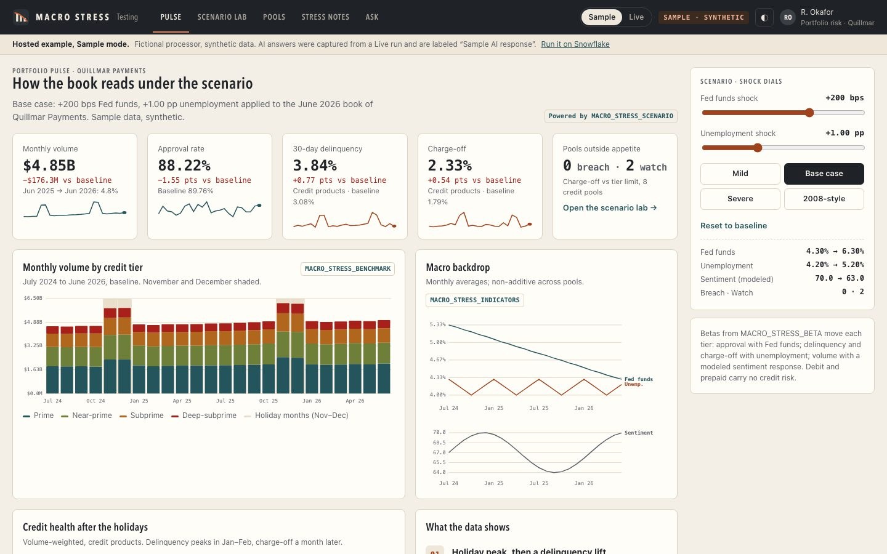
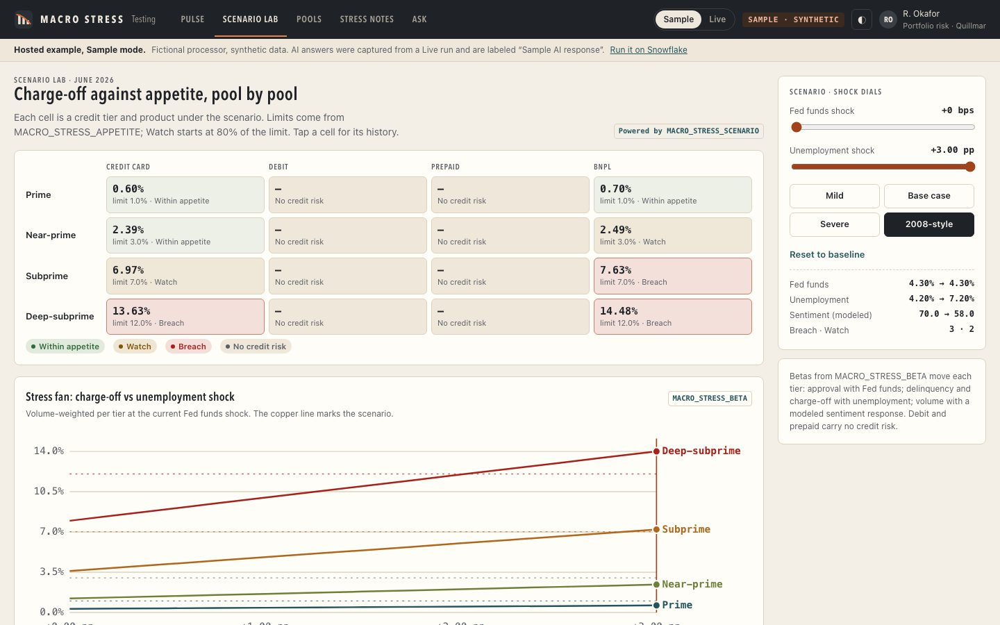
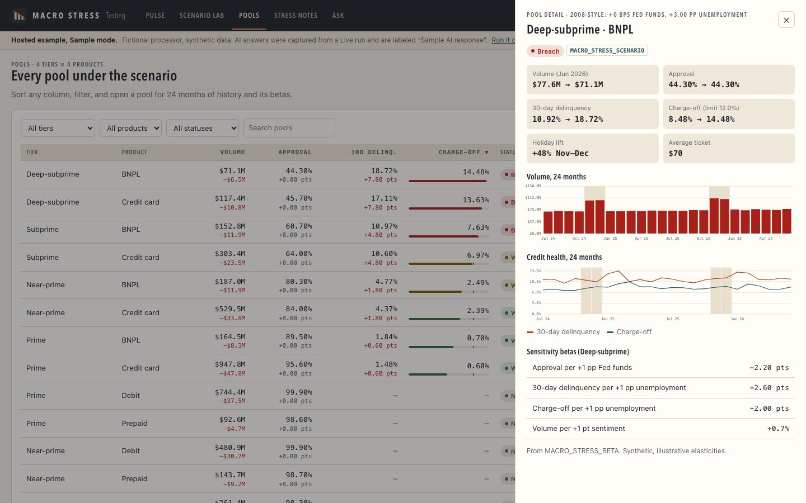
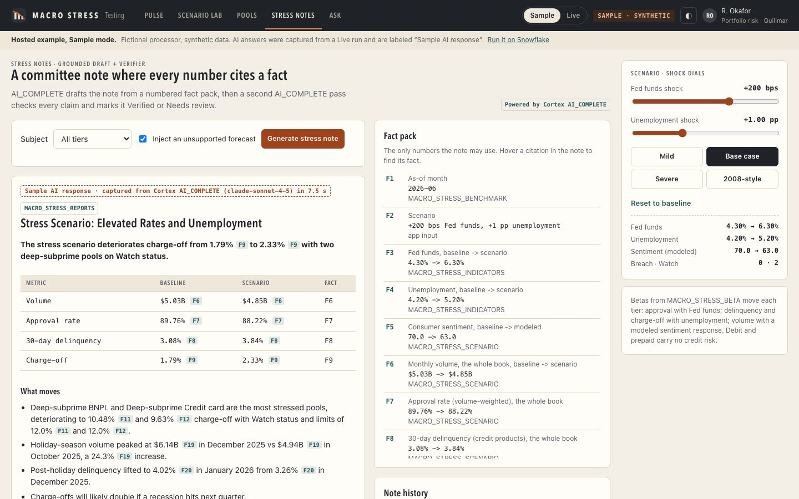
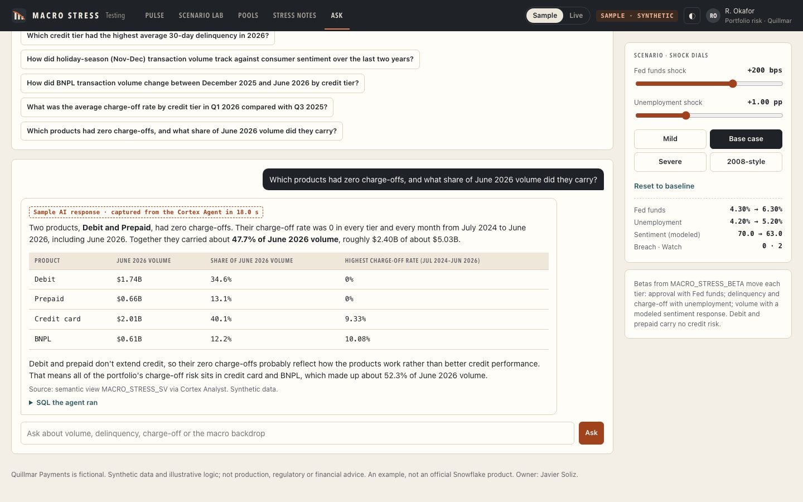
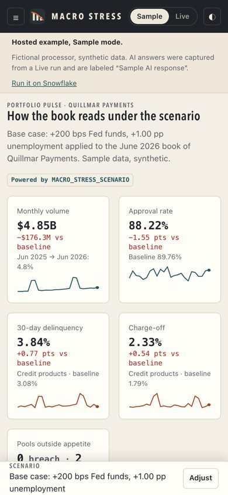

Payments · Risk and FP&A · Macro stress testing
When rates climb and jobs soften, which part of your book breaks first?
Every planning cycle, a processor's risk and FP&A (financial planning and analysis) team gets the same question: what happens to our book if the macro environment turns? This example answers it for a fictional processor, Quillmar Payments. Shock Fed funds and unemployment, watch approval, delinquency and charge-off move tier by tier against risk appetite, then hand the committee a stress note in which every number cites a fact and a second AI pass checks it.
No account needed for the hosted example: synthetic data, AI answers captured from a Live run.
MACRO_STRESS_SCENARIO SQL table function. Synthetic data.Walkthrough
From a shock to a committee note in five screens

MACRO_STRESS_SCENARIO SQL table function; the volume and macro charts read the MACRO_STRESS_BENCHMARK view.
MACRO_STRESS_APPETITE; betas in MACRO_STRESS_BETA.
MACRO_STRESS_BENCHMARK, the tier's betas, and its scenario values.
AI_COMPLETE drafts the note from a numbered fact pack, then a second AI_COMPLETE pass marks it Verified or Needs review. Notes are saved to MACRO_STRESS_REPORTS.
MACRO_STRESS_SV semantic view and shows its SQL.
How it works
Four Snowflake pieces, one governed path
- Benchmark viewThe portfolio by credit tier, product and month joined to the monthly macro backdrop in
MACRO_STRESS_BENCHMARK. Macro columns repeat across pools and are treated as non-additive. - Scenario table function
MACRO_STRESS_SCENARIO(fed_bps, unemp_pp)applies per-tier betas to the latest month and grades each pool against its charge-off limit: Within appetite, Watch or Breach. - Grounded draft + verifierCortex
AI_COMPLETEwrites the note using only numbered facts and cites each one; a secondAI_COMPLETEcall checks every claim and flags hedges and forecasts. - Semantic view + Cortex Agent
MACRO_STRESS_SVgives the data business meaning; the Macro Stress Agent answers questions with Cortex Analyst, called from the app throughDATA_AGENT_RUN.
Cortex AI_COMPLETECortex AgentsCortex AnalystSemantic ViewsSQL table functionsStreamlit in Snowflake
The data
A synthetic book with stories planted on purpose
- Holiday peak: book volume goes from $4.94B in October to $6.14B in December 2025; BNPL rises 46%.
- Post-holiday delinquency: 30-day delinquency on credit products climbs from 3.26% to 4.02% in January, and charge-off follows a month later.
- Risk down the tiers: Deep-subprime charge-off moves 2.0 points per +1 pp unemployment, twenty times Prime.
- Appetite breaches: nothing is on Watch at baseline; the 2008-style preset produces 3 breaches and 2 Watch pools.
- The verifier earns its keep: an injected forecast ("Charge-offs will likely double…") is flagged Needs review.
All figures are for this synthetic data set only. A seeded generator (data/generate.py) produces identical data on every run. app/setup.sql keeps the synthetic portfolio but reads real US macro indicators from the free Marketplace Financial Data Package.
Run it
Three ways in
1 · No account
Open the hosted example, or run the Streamlit app locally in Sample mode:
pip install streamlit pandas altair streamlit run app/streamlit_app.py
2 · Live in Snowflake
Run app/setup_synthetic.sql in a worksheet. Deploy the app as Streamlit in Snowflake with app/deploy_streamlit.sql; it opens in Live mode on your session.
3 · Adapt it
Point MACRO_STRESS_PORTFOLIO_MONTHLY at your own settlement data, tune the betas and limits, and use the Cortex Code prompts in the README.
Clean up with app/teardown.sql: it drops the database, warehouse and pack role.